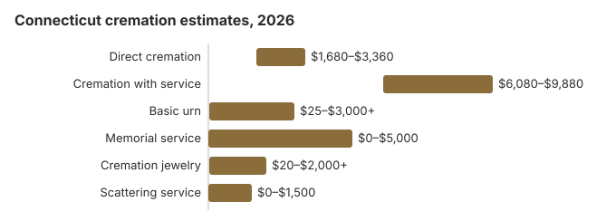

Cremation Costs in Connecticut (2026)
By our estimates a Connecticut direct cremation runs about $2,400 and cremation after a full funeral about $7,600, and about 52% of Connecticut deaths end in cremation. Connecticut adds two costs other states often do not: a medical examiner's cremation certificate, $150, for every adult cremation, and a $5 town permit. It also bars cremation until 48 hours after death unless the death was from a communicable disease, and requires a licensed funeral director. This page covers those steps, the DSS allowance, burial at sea and the state veterans cemetery.
Cremation Choices Offered in Connecticut
Direct Cremation
- Lowest Connecticut cost
- Cremation without a service first
- Body taken to the crematory directly
- Family takes home the remains
- Memorial can be arranged later
Cremation with Service
- Funeral, then the cremation
- Family may hold a viewing
- Ceremony at a funeral home or church
- A simple urn may be included
- Similar to a burial funeral
What Each Part of a Connecticut Cremation Costs
| Expense | Connecticut estimate | Price range |
|---|---|---|
| Direct cremation | $2,400 | $1,680 – $3,360 |
| Cremation with service | $7,600 | $6,080 – $9,880 |
| Basic urn | $50 – $300 | $25 – $3,000+ |
| Memorial service | $500 – $2,000 | $0 – $5,000 |
| Cremation jewelry | $50 – $500 | $20 – $2,000+ |
| Scattering service | $200 – $600 | $0 – $1,500 |
About the Connecticut numbers: they are estimates from our cost model rather than prices collected from Connecticut crematories; compare quotes with them, and do not treat them as a quote or advice. Read our method and the disclaimer.
State sources: Connecticut Department of Public Health; Connecticut DSS.

What to Know Before Choosing Cremation in Connecticut
Connecticut's cremation paperwork, in order:
- Before any Connecticut cremation, a medical examiner has to complete a cremation certificate after inquiring into the cause and manner of death, and the estate pays $150 for it; that fee is not charged for anyone under 18 (Conn. Gen. Stat. § 19a-323).
- The town registrar then issues the cremation permit, which costs $5 by statute, and Connecticut bars cremation until 48 hours after death unless the death came from a communicable disease.
- Ask the Connecticut provider for a ready date for the ashes, whether they are delivered or picked up, and whether a certified death certificate is in the price.
Spending Less on a Connecticut Cremation
Ways to keep a Connecticut cremation affordable:
- Get several price lists. A Connecticut funeral home has to hand over its General Price List when asked and quote prices by phone; compare the direct cremation entries, and check whether the $150 certificate and $5 permit are included.
- Ask about holding fees. The 48-hour wait and the OCME inquiry mean the body is held at least two days, so ask whether refrigeration or storage is billed separately.
For ways to bring a Connecticut cremation bill down, see our affordable funeral options guide or learn how to pay for a funeral with no money.
Planning a Memorial After a Connecticut Cremation
Connecticut's 48-hour rule and the medical examiner's review mean a cremation rarely happens the day after death, so many families hold the memorial later, once the ashes are back. An urn can be buried or placed in a niche at any time of year; ask the cemetery about its urn burial fee and any required urn vault. By our figures that also makes direct cremation roughly $7,800 cheaper than a funeral with burial here.
Cremation Resources
- Funeral Consumers AllianceNonprofit advocacy: compare cremation providers
- Cremation Jewelry GuideMemorial keepsakes and remembrance options
- Cremation vs. Burial CostsSide-by-side cost comparison
- Pet Cremation CostsOptions and prices for pet cremation and memorials
- Final Expense InsuranceCoverage options to help pay for cremation costs
Compare Funeral Costs
- Average Funeral Cost in 2026National cost breakdown with real prices
- Cremation vs. Burial Cost ComparisonSide-by-side price comparison to help you decide
- Funeral Cost BreakdownEvery line item explained: know what you're paying for
- Cheapest Funeral OptionsLower-cost alternatives, with typical price ranges
- Direct Cremation: Most Affordable OptionNFDA 2023 median $2,645 with a family-supplied container (latest available)
- How to Compare Funeral PricesStep-by-step guide to getting the best price
Frequently Asked Questions
What does a Connecticut cremation cost?
We estimate about $2,400 for a Connecticut direct cremation and about $7,600 for cremation after a full funeral.
What kinds of cremation services can I choose in Connecticut?
Connecticut families usually pick one of three routes: direct cremation at about $2,400 with no service, cremation followed by a memorial held later wherever the family likes, or a full funeral with viewing before the cremation. Each one can be adjusted to fit the family.
Which Connecticut rules apply before cremation?
Under Conn. Gen. Stat. § 19a-323, cremation must wait 48 hours after death unless the death came from a communicable disease, and a medical examiner must issue a cremation certificate.
Where the OCME takes jurisdiction, as with an accident or sudden death, the body stays with that office until it is released. Devices such as a pacemaker or defibrillator have to come out before cremation; ask if the quote includes removal.
If a provider mishandles any of this, the Connecticut Department of Public Health takes the complaint at 860-509-7603.
Can I scatter ashes in Connecticut?
Connecticut has no statute listing where ashes may or may not be scattered. The state's control comes earlier, in the paperwork: under Conn. Gen. Stat. § 19a-323 the cremation permit records the intended disposition, and the medical examiner's cremation certificate carries a $150 fee. Once the family has the remains, the decision is theirs, with the landowner's permission on private property and the managing agency's rules on public land.
For Long Island Sound or open water, note that the federal burial-at-sea rule applies only to ocean waters at least three nautical miles from shore, with a report to EPA Region 1 within 30 days. The Department of Public Health (860-509-7603) licenses funeral homes and crematories.
Why do Connecticut families choose cremation?
Price is part of it: our estimates show direct cremation saving about $7,800 compared with a traditional Connecticut funeral with burial.
How long must a Connecticut family wait?
At least 48 hours after death (Conn. Gen. Stat. § 19a-323), plus the medical examiner's inquiry, before the cremation can happen. Direct cremation at about $2,400 adds no service to that.
Is a funeral possible before a Connecticut cremation?
Yes. A visitation and funeral before the cremation brings the Connecticut estimate to about $7,600, roughly $5,200 above direct cremation.
More for Connecticut
What the Connecticut medical examiner actually checks
Every cremation in Connecticut goes through the Office of the Chief Medical Examiner, even when the death was expected. The OCME says the law requires it to inquire into every death before a cremation. That inquiry can mean contacting the family or the doctor, examining the body, or both. The funeral director handles the request and the fee (Connecticut OCME FAQ; checked October 29, 2026).
- Tests still pending: if toxicology or more investigation is needed, the OCME issues a "pending" death certificate so burial or cremation can go ahead without waiting.
- Insurance: some insurers want the final certificate. When the family asks, the OCME can tell the insurer the final cause and manner of death.
- Autopsies: the OCME does not charge families for an autopsy. Its fees cover cremation certificates, reports and civil testimony.
Connecticut cremation licensing and DSS help
The Connecticut Department of Public Health licenses funeral homes and crematories and takes complaints at 860-509-7603.
Connecticut is one of nine states where, as the Funeral Consumers Alliance explains, families cannot act on their own: a licensed funeral director must file the death certificate, move the body and obtain the disposition permit (Conn. Gen. Stat. §§ 7-62b, 7-65a, 7-69), so a $2,400 direct cremation still goes through one.
The 48-hour wait, the communicable-disease exception and the medical examiner's certificate all come from Conn. Gen. Stat. § 19a-323.
DSS allowance and prepaid contracts
The Department of Social Services funeral and burial allowance pays up to $1,800, reduced by contributions over $3,400, and the application must be made within a year; ask whether it covers the cremation you are planning. Medicaid applicants may also prepay up to $10,000 in an irrevocable funeral contract that can be written for cremation (Conn. Gen. Stat. § 42-207; Connecticut DSS).
Veterans
The Connecticut State Veterans Cemetery (860-616-3688) in Middletown accepts urns, and an eligible veteran's niche or grave and marker are free; see cem.va.gov.
Connecticut checklist
- Confirm the $150 certificate, the $5 permit and death certificates are in the quote.
- Plan travel and the memorial around the 48-hour wait.
- Ask DSS how family contributions over $3,400 affect the $1,800 allowance.
- Keep 860-509-7603 for complaints.